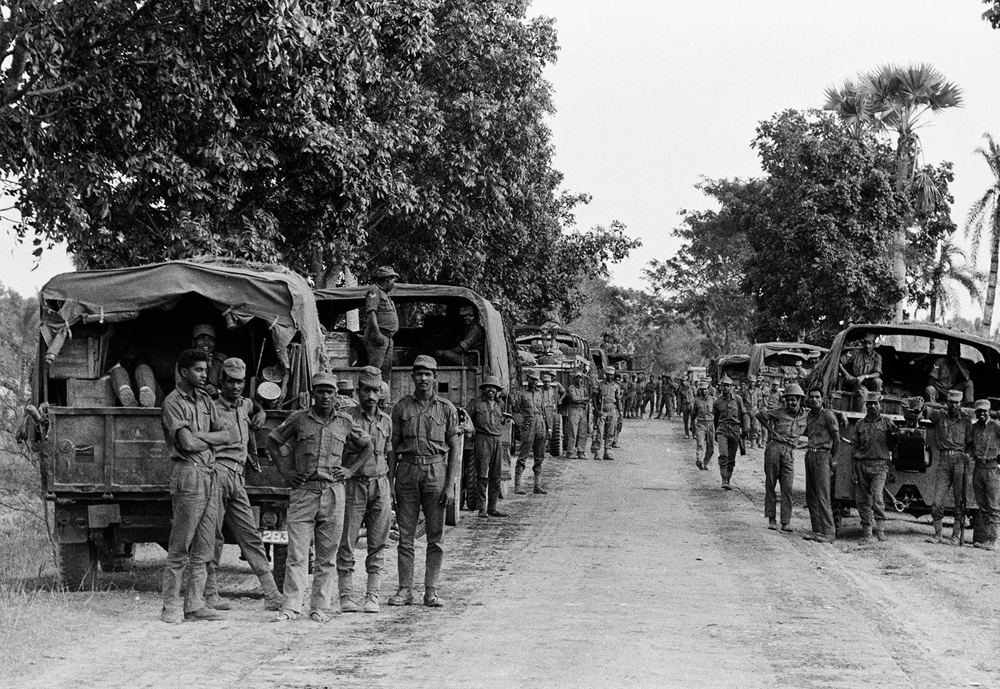

Main War Report

Armed conflict between Pakistan and India intensified
as military operations expanded across multiple regions.
Air strikes and ground engagements were reported.
Officials stated that defensive actions were taken
in response to aggression.
Citizens were urged to stay united.
|
Military Developments

Strategic locations were targeted overnight.
Air force units responded quickly to cross-border
attacks. Security forces increased patrols
in major cities to ensure public safety.
Key Highlights:
- Air force operations
- Ground military response
- Emergency government measures
- Public unity appeal
|
Political Response
Political leaders addressed the nation
and reassured citizens about the country’s preparedness.
The government emphasized national solidarity.
Public morale remained strong despite rising tensions.
Security remained on high alert.
|